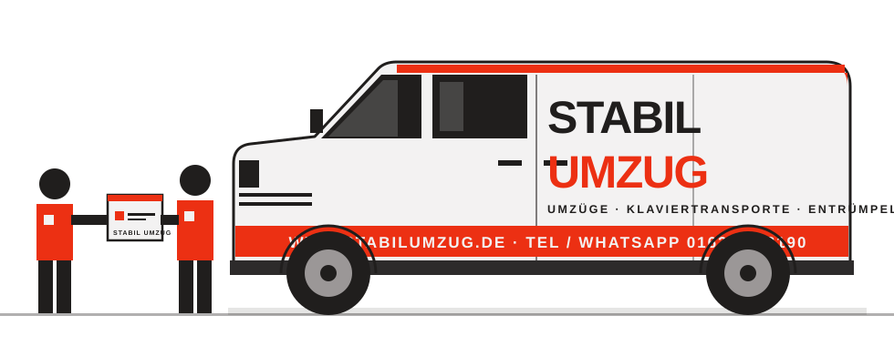

Privatumzug
Von der Einzimmerwohnung bis zum Haus: tragen, laden, fahren, aufstellen – mit festem Team und eigenem Transporter.
UmzugsvolumenBeschreiben Sie Ihren Umzug einmal – Räume, Möbel, Zugang. Sie sehen sofort Volumen, Fahrzeug und Teamgröße. Ihr persönliches Angebot kommt innerhalb von 24 Stunden.

Jeder Schritt braucht Angaben aus dem vorherigen. Die ersten beiden – die neue Wohnung ausmessen und den Hausrat erfassen – bestimmen fast alles, was danach kommt.
Vier Schritte mit Ihnen – ohne Besichtigungstermin, wenn Ihre Angaben reichen.
Räume, Möbel, Zugang – grob reicht. Sie sehen sofort Volumen, Fahrzeug und Teamgröße.
Wir prüfen Ihre Angaben und senden das Angebot per WhatsApp oder E-Mail. Bei Unsicherheit ein kurzer Video-Check.
Eigener Transporter und ein Ansprechpartner vor Ort.
Möbelmontage, Übergabeprotokoll, Rechnung.
Was Sie im Planer angeben, fließt in Angebot, Teamplanung, Halteverbotszone und Checkliste. Niemand fragt Sie zweimal.
Kein Pauschalpreis aus dem Nichts: Ihr Angebot besteht aus acht Teilen, jedes mit einer klaren Grundlage. Online zeigen wir keine Preise – wir rechnen persönlich.
Volumen, Teamgröße und Stunden.
aus Ihren GegenständenGröße des LKW und Anzahl der Tage.
aus Volumen und GewichtKilometer jeder Fahrt, bei weiten Strecken Übernachtung.
aus beiden AdressenMinuten je Möbelstück für Ab- und Aufbau.
aus dem MöbelkatalogKartons, Material und Packstunden.
aus der KartonzahlEtage, Aufzug, Tragweg, Möbellift.
aus beiden GebäudenHalteverbot, Entsorgung, Küche, Lager.
aus Ihrer AuswahlAngegebener Wert Ihres Hausrats.
aus Ihrer AngabeSie wählen, was wir übernehmen. Der Rest bleibt bei Ihnen – und günstiger.
Von der Einzimmerwohnung bis zum Haus: tragen, laden, fahren, aufstellen – mit festem Team und eigenem Transporter.
UmzugsvolumenArbeitsplätze, Akten und Technik so umziehen, dass der Betrieb schnell weiterläuft.
Kartons in passenden Größen und auf Wunsch Packhilfe für Geschirr, Bücher und Kleidung.
Kartons und PackenBetten, Schränke und Regale abbauen und am neuen Ort wieder aufbauen – nach Ihrer Liste.
MöbelmontageKüchenmöbel abbauen, transportieren und aufbauen. Wasser- und Stromanschluss nach Absprache.
Küche und EinzugWas nicht mitzieht, sortieren, abholen und entsorgen – auch Sperrmüll.
SperrmüllUnklare Deckung ist der häufigste Streitpunkt nach einem Umzug. Deshalb nennen wir Ausschlüsse und Fristen vorher – in einfachen Worten.
Sichtbare Schäden bei der Übergabe melden, verdeckte Schäden schriftlich innerhalb der Frist im Vertrag. Allgemeine Orientierung – den genauen Schutz nennt Ihr Vertrag.
Was Familien uns vor dem Umzug am häufigsten fragen.
Der Preis setzt sich aus acht Teilen zusammen: Arbeit, Fahrzeug, Strecke, Montage, Verpackung, Zugang, Extras und Versicherung. Online zeigen wir keine Preise. Sie beschreiben Ihren Umzug im Planer, wir rechnen jede Position persönlich und senden Ihnen das Angebot innerhalb von 24 Stunden. Umzugskosten
Der Planer rechnet mit typischen Planungswerten je Möbelstück und einem Puffer von 10 Prozent. Er zeigt das Volumen als Spanne: Je mehr Gegenstände Sie im Katalog bestätigen, desto enger wird sie. Bei großer Unsicherheit prüfen wir Ihre Liste in einem kurzen Video-Check.
Wir sitzen in Essen und ziehen im Ruhrgebiet und in ganz Deutschland um. Bei weiten Strecken planen wir Fahrzeit, Übernachtung und Entladetag mit ein.
Wenn der LKW nicht legal direkt vor dem Haus halten kann, ist sie meist sinnvoll. Sie wird bei der Stadt beantragt, die Vorlaufzeit unterscheidet sich je nach Stadt. Auf Wunsch übernehmen wir den Antrag. Halteverbotszone
Während des Umzugs haftet das Umzugsunternehmen gesetzlich für Verlust und Schäden, begrenzt je Kubikmeter. Für höheren Schutz gibt es eine zusätzliche Transportversicherung bis zu Ihrem angegebenen Wert. Den genauen Umfang nennt Ihr Vertrag. Versicherung
So früh wie möglich, besonders zum Monatsende und in den Ferien. Kurzfristig klappt es oft auch – das hängt von unserer Auslastung ab.
Beschreiben Sie Ihren Umzug einmal. Wir senden Ihr persönliches Angebot innerhalb von 24 Stunden – per WhatsApp oder E-Mail.